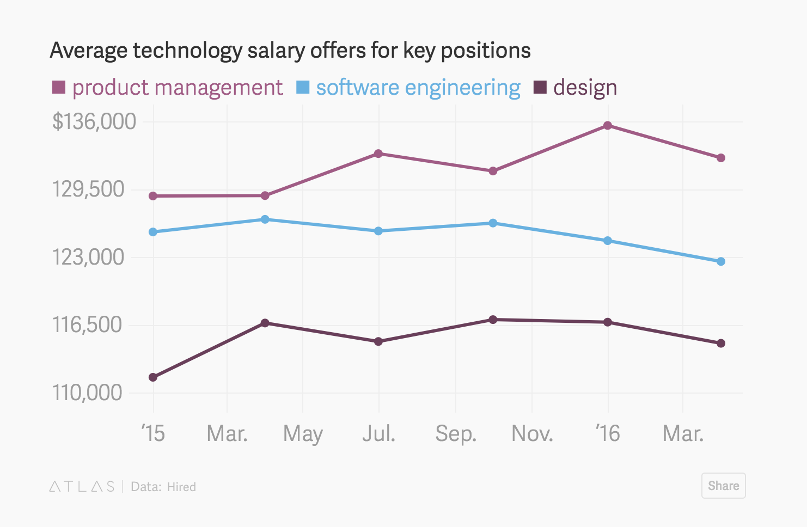

- 00 开篇词 打造千万用户的世界级产品.md.html
- 01 什么是优秀的产品经理？.md.html
- 02 硅谷的产品经理是什么样子的？.md.html
- 03 科技巨头和初创公司的产品经理有什么不同？.md.html
- 04 产品经理和项目经理有什么区别？.md.html
- 05 硅谷产品经理每天在做什么？.md.html
- 06 硅谷产品经理们都来自什么背景？.md.html
- 07 如何寻找用户需求？.md.html
- 08 目标客户和用户画像.md.html
- 09 手把手教你写用例： 优化微信加好友的功能.md.html
- 10 什么是最小化可行产品（MVP）？.md.html
- 11 案例：产品发布之前出了乱子，如何权衡取舍？.md.html
- 12 制定产品成功指标.md.html
- 13 如何撰写产品需求文档？.md.html
- 14 如何用数据做出产品决定？.md.html
- 15 如何组织有效的会议？.md.html
- 16 如何和工程师有效沟通？.md.html
- 17 如何与设计师有效沟通？.md.html
- 18 如何搞定A_B测试？.md.html
- 19 增长黑客的核心公式.md.html
- 20 想要增长，你的团队需要高效的工作流.md.html
- 22 硅谷高管的UIE（Understand, Identify, Execute）增长论.md.html
- 23 增长的核心在于减少用户阻力.md.html
- 24 产品增长的代价，如何权衡取舍？.md.html
- 25 三分靠策略 七分靠执行.md.html
- 26 为什么加班很久但是没成果？产品开发流程有问题.md.html
- 27 如何激励和管理比你资深的工程师、设计师？.md.html
- 28 产品经理的晋升秘密.md.html
- 29 你需要一个产品路线图.md.html
- 30 如何制定产品优先级 ？.md.html
- 31 好的产品经理和卓越的产品经理.md.html
- 32 产品经理面试考察的是什么？.md.html
- 33 如何提升产品感（product sense）？.md.html
- 34 如何提升产品经理的综合素质？.md.html
- 35 非计算机专业也能做产品经理？.md.html
- 36 模拟一场硅谷的产品经理面试.md.html
- 尾声 每个世界级的产品都有其使命.md.html
- 新书首发 《硅谷产品：36讲直通世界级产品经理》.md.html
- 捐赠
02 硅谷的产品经理是什么样子的？
硅谷的产品经理热
如果你问斯坦福大学的大四学生，竞争最激烈的工作是什么？他们的答案已经不是投资银行分析师，或者麦肯锡的咨询顾问，也不是谷歌的工程师，而是：产品经理。
其实，不仅是本科学生， 斯坦福大学和哈佛大学的MBA毕业生也在疯狂地准备产品经理面试，而斯坦福大学商学院甚至在今年刚刚开设了产品经理课程，这是史无前例的。
这么多最最优秀的学生的梦想，就是能进入谷歌的轮换制产品经理项目。
Yahoo的前CEO玛丽莎 · 梅耶尔曾经在谷歌担任产品经理，她建立了谷歌后来闻名遐迩的产品经理项目，每年在全球挑选和培养三四十个刚毕业的、“最聪明”的年轻人，让他们一上来就直接带团队管产品。
这些年轻人会得到对公司成功非常重要的顶级项目，并且会有专人对他们进行各方面的培训，还会组织一次环游世界的游学，玛丽莎亲自带领他们和世界各地的用户交流，拓展他们的视野。
红杉资本的首位女性高级合伙人杰斯 · 李（Jess Lee），之前曾担任Polyvore公司CEO（该公司后被Yahoo用2亿美元收购），就出身于玛丽莎开创的这个谷歌产品经理训练营，在谷歌担任了4年的产品经理。
这个项目还出了Dropbox的产品总监杰夫 · 巴蒂尔马（Jeff Bartelma），融资上亿美元的任务管理创业公司Asana的创始人贾斯丁 · 罗森斯坦（Justin Rosenstein）， 被Salesforce以7.5亿美元收购的Quip的创始人、曾任Facebook首席技术官的布莱特 · 泰勒（Bret Taylor），还有A/B测试公司Optimizely的两位创始人丹 · 斯洛克（Dan Siroker）和皮特 · 库曼（Pete Kooman）等等。
所以，进入谷歌的这个产品经理项目成了斯坦福、哈佛这类学府最优秀学生的目标。在这之后，Facebook、LinkedIn、Uber等公司开始建立了自己的产品经理项目，为期一到两年，项目结束之后，这些年轻人会立即被委以重任。他们中的很多人，二十多岁就成了公司高管，而公司几乎所有能在25岁就当上产品经理的人，都是这个项目培养出来的。
这些硅谷顶级公司的产品经理项目加在一起，一年录取的人也不过一百多个，而随着申请者的人数水涨船高，录取率可以说是“百里挑一”。
而对产品经理这样高涨的热情，绝不仅在校园可见。已在谷歌、Facebook这样的公司工作的工程师、设计师、运营经理们，也在积极地准备产品经理面试，希望能够通过这样的方式进入硅谷最核心的岗位。
为什么硅谷人会对产品经理抱有这么大的热情呢？
- 首先是薪资。 2016年，美国的招聘网站Hired发布的薪水调查显示，在硅谷收入最高的职位并不是软件工程师， 而是产品经理。苹果公司的高级产品经理年薪高达17万美元。

在谷歌、Facebook这样的科技巨鳄中，产品经理可以一步步晋升到副总裁级别，并没有什么职业瓶颈。而如果你选择创业，产品经理所需要的技能和创业公司的CEO非常匹配，所以产品经理又是很好的创业训练营。
有意思的是，如果Facebook这样的公司收购了一个初创公司，那么这个初创公司的CEO进入Facebook多半会被聘为产品经理。所以很多硅谷的人说，产品经理是离CEO最近的职位。
硅谷的产品经理是什么样子的？
硅谷的产品经理相当于产品的全线负责人，他们不仅负责制定产品的功能要求，还负责制定产品线的蓝图和策略。
看上去产品经理每天的工作就是开开会、写写文档，和各种各样的人沟通，但是一个优秀的产品经理绝对是硅谷猎头们，以及各大公司招聘部门不惜一切代价也要招来的人才。为什么？Google风投的合伙人肯·诺顿（Ken Norton）曾说：长期来看，公司的成与败取决于产品经理。
1. 什么样的背景才能成为产品经理？
这个问题上，各个公司有各自的招聘哲学。谷歌的产品经理全部要求是技术背景出身，面试的内容也包括了编程面试。但是Facebook和Uber这样的公司，并没有对技术背景的硬性要求，而是喜欢招一些多元化背景的人。
我在Facebook的同事有之前的职业音乐家、艺术家，也有投资银行家、咨询师、天使投资人、新闻记者等各行各业出身的人。
可以说，硅谷的产品经理尽管百里挑一，录取难度极高，但是还真没有一个固定的模板，要求一定是什么专业或者什么背景出身。
2. 影响他人，而不是直接管理
从行政管理角度来说，产品经理需要的是影响他人，而不是直接管理他们。 硅谷的很多公司，产品经理并不担任行政职务，也就是说工程师和设计师有各自的老板，并不汇报给产品经理。
在Facebook和谷歌这样的公司，工程师导向的文化背景下，产品经理并不能要求工程师做什么工程师就照做。这就要求，产品经理得晓之以情动之以礼，能够用诱人的未来蓝图、逻辑性的数据支持，和切实可行的运作方案，让工程师们受到启发， 激发他们的工作热情和潜能，从而实现自己的产品蓝图。
3. 1个产品经理 vs 7个工程师
产品经理和工程师们的比例，每个公司有所不同，但一般7个工程师对应一个产品经理算是一个比较常见的比例。
4.越高级的产品经理，越不会花大时间写需求文档
在硅谷，一个优秀的产品经理其工作不仅仅是写出一个完美的产品功能文档。实际上， 越是高级的产品经理， 越不会花大部分时间在写文档上。
对他们来说，如何能够思考产品两年三年之后的长期计划，如何能够把一个产品领域分成几个不同的功能线，如何制定有效率、有创新能力的团队文化，让团队里的设计师、工程师、运营经理等，能够最大限度发挥自己的工作积极性，如何管理一个不断扩大的产品团队等等， 才是应该花时间的大头。
在Facebook，你很少看到产品经理花很多时间画流程功能设计图，大部分时候产品经理会讲清楚产品解决的问题，如何衡量产品的成功标准，然后会和设计师们在白板面前写写画画，在沟通中设计产品的体验过程。
你很少会看到产品经理一个人闷在电脑前，几个星期写出一份精确到每一个按钮的产品需求文档，然后直接给设计师开始设计，然后工程师开始编程。我们的产品设计过程是一个团队合作，想法不断碰撞的过程， 如果一个人独自写所有的文档，万一某个功能和现有的架构根本不契合，又要重新来过，反而浪费了大量时间。
5. 并非事无巨细，应该懂得放权
一个好的产品经理，知道什么决定需要自己拍板，什么决定可以交给团队的其他人完成。好的产品经理还是一个很好的沟通者，能够组织一个有效的产品设计会议，让工程师和设计师能够快速地了解彼此的限制条件，从而设计出投入最少，回报最大的产品功能体验。
总结
今天我先从硅谷的产品经理热说起，揭秘了美国最优秀的计算机专业毕业生、商学院毕业生全部都“趋之若鹜”的产品经理项目是怎么运作的，培养出了什么人才， 也解释了为什么Yahoo、谷歌、Asana、Quip的CEO全部都是产品经理出身。
之后，我通过描述硅谷的产品经理是什么样子的，描述了产品经理应当具有的一些重要技能，相信你已经了解为什么“长期来看，公司的成与败取决于产品经理”，知道了为什么最优秀的产品经理不应该把全部时间花在写文档上，而是应该让团队的成员得到积极影响，让别人替自己做决定。
思考题
第一个是，如果你曾经和产品经理工作过（或者自己是产品经理），欢迎留言和我讲讲你见过的优秀产品经理最突出的特点是什么？你见过的最差劲的产品经理最大的缺点又是什么？
第二个是，硅谷有着较重的工程师主导产品开发的文化，因此外界对硅谷产品经理的职责和权力有很多猜测和想法，不知在你的公司是产品经理导向还是工程师导向呢？欢迎给我留言。
© 2019 - 2023 Liangliang Lee. Powered by gin and hexo-theme-book.